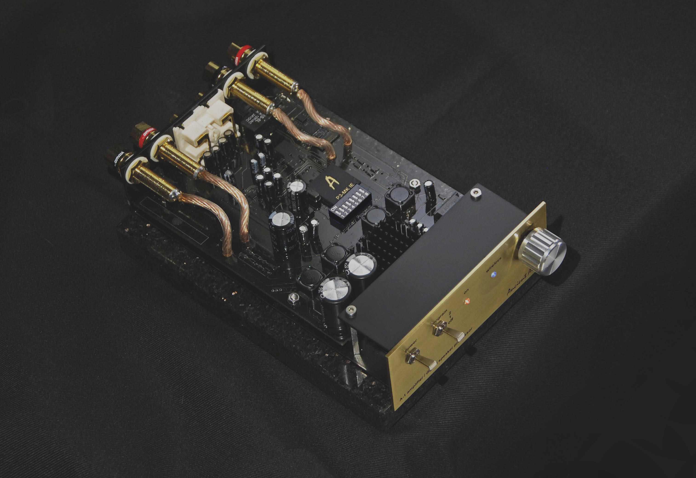

A-1
But P-3 and P-1 were just outboard processors . They need to be placed before amplifier. It gave the idea , to make one device, integrating both Digital Speakerr Processor and amplifier. A-1 processor makes use of the same algorithm and central flagship P-3 unit of the processor as well. It has a smaller storage capacity for different preset modes of the speakers (125 instead of 250). A-1 amplifier works in Class D, what makes it small, efficient, and easy to drive any small or medium size speaker. Little size make it ideal to personal or life style systems. But small size doesn’t mean the small sound...Delivering over 120 W , it can make really dynamic sound, with huge soundstage, and punchy bass impact.
The P-3 MK I E processor influences:
The micro-detail reproduction Loudspeaker differ widely in many respects. Hence the correction parameters for different models must be different. P-3 processor can memorize up to as many as 150 loudspeakers or headphones models. The present database comprises the pre-set modes for the following models: Dynaudio, Sonus Faber, Avantgarde, Wilson Audio, Spendor, Raidho. Since there is a wide variety of different makes of loudspeakers or headphones we can fully adapt our D-3 processor to your system to make the most and the best of it. The amplifier can be connect by traditional, line level analog signals. But also, it includes wireless Bluetooth connection. Matched with just phone, tablet or computer, it creates a really versatile, easy to operate audio system.